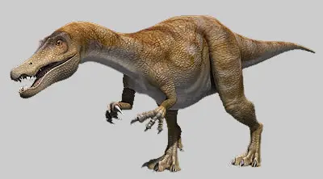

Cos'era il Baryonix?
Il Baryonyx era un dinosauro carnivoro appartenente ai teropodi, ma con caratteristiche particolari che lo rendono diverso da altri predatori. Era infatti specializzato nella pesca, un comportamento raro tra i dinosauri.

Il Baryonyx era un dinosauro carnivoro appartenente ai teropodi, ma con caratteristiche particolari che lo rendono diverso da altri predatori. Era infatti specializzato nella pesca, un comportamento raro tra i dinosauri.
Lungo circa 8–10 metri, aveva:
Si nutriva principalmente di:
Viveva in zone fluviali dell’Europa, soprattutto nell’attuale territorio del Regno Unito.